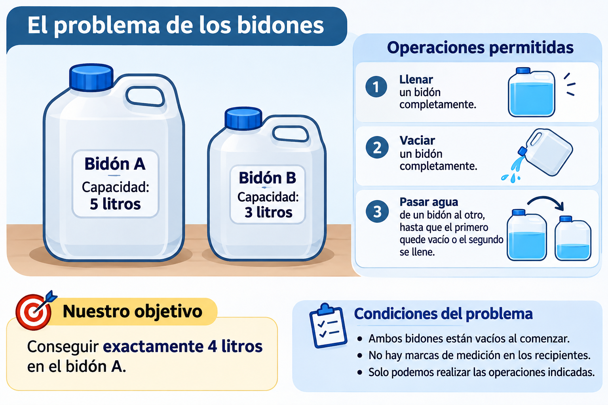

Unidad 1. Pensar como programadores: aprender a resolver problemas
Programación I — 2026
1.º Bachillerato Tecnológico en Informática · DGETP / UTU
¿Qué aprenderemos en esta unidad?
Cuando comenzamos a estudiar programación, es natural pensar que nuestra primera tarea será aprender a escribir instrucciones en un lenguaje como Java.
Sin embargo, conocer las instrucciones de un lenguaje no significa necesariamente saber programar.
Una persona puede saber cómo se escribe una condición, un ciclo o una operación matemática y, aun así, tener dificultades para resolver un problema nuevo.
¿Por qué sucede esto?
Porque programar requiere algo más que conocer instrucciones. Necesitamos comprender el problema, identificar qué información tenemos, determinar qué resultado queremos obtener y construir una secuencia de acciones que nos permita alcanzarlo.
Esa secuencia constituye un algoritmo.
Durante esta unidad aprenderemos a pensar los problemas desde una perspectiva diferente: no solamente intentaremos encontrar una respuesta, sino que procuraremos describir un procedimiento que otra persona —o una computadora— pueda ejecutar para obtenerla.
Estudiaremos qué es un algoritmo, cómo se construye, por qué las instrucciones deben ser precisas, cómo representar una solución mediante pseudocódigo y cómo comprobar su funcionamiento.
También comenzaremos a comprender qué sucede cuando una computadora ejecuta un programa y qué lugar ocupa Java en ese proceso.
No necesitas tener conocimientos previos de programación. Nuestro punto de partida será una situación que podemos resolver sin escribir una sola línea de código.
Cómo utilizar este capítulo de forma autónoma. Cuando encuentres una pregunta de predicción, escribe o piensa tu respuesta antes de revelar la explicación. Si te bloqueas, identifica primero qué datos tienes y qué resultado necesitas; consulta una pista y vuelve a intentarlo. Si ya entendiste el ejemplo, compruébalo con otros datos y explica qué cambiaría. En los ejercicios con soluciones, la página debe mostrar las pistas antes de la resolución completa. Si estudias el Markdown directamente, oculta el párrafo de solución mientras realizas la predicción.
1. Antes de escribir código: ¿qué significa resolver un problema?
Todos los días resolvemos problemas.
Algunos son muy sencillos, como determinar cuánto dinero necesitamos para comprar dos boletos.
Otros requieren varios pasos: organizar un horario, calcular el promedio de un conjunto de calificaciones o encontrar el camino más conveniente para llegar a un lugar.
En muchas ocasiones resolvemos estas situaciones casi automáticamente.
Sabemos qué hacer porque tenemos experiencia y podemos interpretar información que no siempre está expresada de manera completa.
Por ejemplo, si alguien nos dice:
«Prepara un vaso de agua».
Entendemos que debemos buscar un vaso, localizar una fuente de agua, llenar el recipiente y evitar que se desborde.
La persona no necesita describir cada movimiento.
Pero imaginemos que debemos explicar el procedimiento a alguien que no puede interpretar nuestras intenciones ni completar instrucciones incompletas.
Tendríamos que ser mucho más precisos.
Esto se parece a uno de los principales desafíos de la programación.
Una computadora no debe adivinar qué queríamos hacer: necesitamos construir instrucciones que expresen correctamente lo que debe ejecutar.
1.1. Obtener una respuesta no es lo mismo que explicar cómo obtenerla
Consideremos este problema:
Una persona compra tres cuadernos de $85 cada uno. ¿Cuánto debe pagar?
Podemos responder:
$255.
Pero también podemos describir cómo llegamos a ese resultado:
- Identificar el precio de un cuaderno.
- Identificar la cantidad comprada.
- Multiplicar el precio por la cantidad.
- Mostrar el importe total.
Esta segunda respuesta tiene una característica importante: no solamente resuelve una compra concreta.
También describe un procedimiento que podemos utilizar con otros precios y cantidades.
Si mañana compramos cinco cuadernos de $90, el procedimiento sigue siendo válido.
Solo cambian los datos.
1.2. Resolver casos particulares y construir soluciones generales
Cuando resolvemos un caso particular, encontramos una respuesta para unos datos específicos.
Cuando construimos un algoritmo, intentamos describir un procedimiento que funcione para los casos que cumplen las condiciones del problema.
Por ejemplo:
Caso particular
Tres cuadernos de $85:
85 × 3 = 255
Procedimiento general
- Obtener el precio.
- Obtener la cantidad.
- Calcular
precio × cantidad. - Informar el resultado.
Esta diferencia será fundamental durante todo el curso.
No queremos aprender a construir programas que solamente funcionen con los números que utilizamos durante la explicación.
Queremos aprender a construir soluciones que puedan utilizar diferentes datos.
1.3. Pensar antes de actuar
Una estrategia útil para resolver problemas informáticos es detenerse a responder tres preguntas:
- ¿Qué sabemos?
- ¿Qué queremos conseguir?
- ¿Qué operaciones podemos realizar?
Estas preguntas parecen sencillas, pero evitan comenzar a escribir instrucciones sin comprender el objetivo.
A continuación trabajaremos con un problema donde su importancia se vuelve especialmente evidente.
2. El problema de los bidones
Imaginemos que tenemos dos bidones vacíos.
El primero tiene capacidad para cinco litros.
El segundo tiene capacidad para tres litros.
Disponemos de agua suficiente para llenarlos cuantas veces sea necesario.
Nuestro objetivo consiste en conseguir exactamente cuatro litros de agua en el bidón de cinco litros.
Pero existen restricciones.
Los bidones no tienen marcas de medición.
No podemos calcular visualmente un litro o dos litros y detenernos donde queramos.
Solamente tenemos permitidas determinadas operaciones.

2.1. Las condiciones iniciales
Llamaremos:
Bidón A: capacidad máxima de cinco litros.
Bidón B: capacidad máxima de tres litros.
Al comenzar, ambos están vacíos.
No conocemos el contenido de los bidones mediante marcas de medición, pero podemos determinar ciertas cantidades como consecuencia de las operaciones realizadas.
Por ejemplo, si llenamos completamente el bidón B, sabemos que contiene tres litros.
Y si vertemos todo su contenido dentro del bidón A, que estaba vacío, sabemos que A pasa a contener tres litros.
2.2. Operaciones permitidas
Solamente podemos:
- Llenar completamente un bidón. Si decidimos llenarlo, debe alcanzar su capacidad máxima.
- Vaciar completamente un bidón. No podemos vaciar solamente una parte medida de su contenido.
- Trasvasar agua de un bidón al otro. El trasvase continúa hasta que el bidón de origen queda vacío o el de destino se llena.
La tercera regla es especialmente importante.
No podemos decidir detener el trasvase después de pasar exactamente un litro porque los recipientes no tienen marcas.
Debemos respetar una de las dos condiciones que permiten saber cuándo detenernos.
2.3. ¿Qué necesitamos conseguir?
El objetivo es terminar con cuatro litros en el bidón A.
No es obligatorio que el bidón B termine vacío, salvo que incorporemos esa condición al problema.
En las soluciones que estudiaremos encontraremos estados finales diferentes para B.
Lo fundamental es conseguir exactamente cuatro litros en A.
2.4. Antes de buscar la solución
Podemos comenzar haciéndonos algunas preguntas:
- ¿Cómo podemos conseguir una cantidad que no coincide con la capacidad de ninguno de los recipientes?
- ¿Podemos aprovechar el espacio disponible en un bidón para determinar cuánto agua queda en el otro?
- ¿Qué operación nos permitiría conservar solamente uno o dos litros?
- ¿Necesitamos llenar primero el bidón más grande?
- ¿Existirá más de una solución?
No debemos apresurarnos a escribir instrucciones.
Primero necesitamos explorar qué ocurre cuando realizamos las operaciones permitidas.
2.5. Primer desafío: intenta resolverlo
Antes de conocer las soluciones, vamos a experimentar.
Piensa qué harías primero.
¿Llenarías el bidón de cinco litros o el de tres?
¿Por qué?
No necesitas acertar inmediatamente.
Realiza una operación, observa el resultado y decide cuál podría ser el siguiente paso.
Si llegas a una situación donde no sabes cómo continuar, no significa que hayas fracasado.
Significa que necesitas analizar el estado actual del problema y las operaciones que todavía puedes realizar.
Antes de empezar, escribe o piensa tu predicción: ¿qué bidón llenarías primero y qué esperas conseguir con esa decisión?
Después utiliza el simulador.
¿Qué debes observar?
Mientras experimentas, presta atención a cuatro cuestiones:
- Qué cantidad contiene cada bidón antes de una operación.
- Qué operación decides realizar.
- Qué cantidad contiene cada bidón después.
- Si el nuevo estado te acerca o te aleja del objetivo.
No te preocupes todavía por encontrar la solución más corta.
Intenta conseguir una solución que respete las reglas.
Después podremos analizarla y compararla con otras.
3. Primera solución: conseguir cuatro litros en ocho operaciones
Vamos a construir una solución en la que comenzamos llenando el bidón B, de tres litros.
Para representar el contenido de los recipientes, utilizaremos pares de números.
El primer número indicará cuántos litros contiene A.
El segundo indicará cuántos litros contiene B.
Por ejemplo:
(3, 1)
Significa que el bidón A contiene tres litros y el bidón B contiene uno.
Esta representación nos permitirá registrar qué sucede después de cada operación.
3.1. Representar el problema mediante dos números
Observa que ahora podemos describir la situación de los bidones sin necesidad de dibujarlos constantemente.
Nos alcanza con conocer:
(litros en A, litros en B)
Para este problema no necesitamos registrar el color de los recipientes, el material con el que están fabricados ni el lugar exacto donde están apoyados.
Necesitamos conocer sus capacidades y el volumen de agua que contiene cada uno.
Estamos seleccionando la información relevante.
Esta es una habilidad importante para resolver problemas informáticos: identificar qué información necesitamos representar y qué información podemos dejar fuera.
Más adelante volveremos sobre esta idea cuando aprendamos a identificar entidades y construir objetos.
Por ahora, utilizaremos los pares numéricos para seguir nuestra solución.
3.2. Estado inicial
Los dos bidones están vacíos:
(0, 0)
Nuestro objetivo es llegar a un estado donde A contenga exactamente cuatro litros.
3.3. Paso 1: llenar el bidón B
Llenamos completamente el bidón de tres litros.
Ahora tenemos:
(0, 3)
El bidón A continúa vacío.
3.4. Paso 2: pasar el agua de B hacia A
El bidón A está vacío y puede recibir cinco litros.
Pasamos los tres litros de B hacia A.
Como B queda vacío antes de que A se llene, detenemos el trasvase.
Nuevo estado:
(3, 0)
3.5. Paso 3: llenar nuevamente B
Llenamos otra vez el bidón de tres litros.
Ahora tenemos:
(3, 3)
El bidón A contiene tres litros y B contiene otros tres.
3.6. Antes del paso 4: predice qué sucederá
Llegamos a una situación especialmente importante:
(3, 3)
Queremos trasvasar agua de B hacia A.
Pero todavía no realices mentalmente toda la operación.
Primero responde:
- ¿Cuál es la capacidad máxima de A?
- ¿Cuántos litros contiene actualmente?
- ¿Cuántos litros le faltan para llenarse?
- ¿Cuántos litros contiene B?
- ¿Qué condición hará que se detenga el trasvase?
- ¿Cuánta agua quedará en B?
Ahora sí, comprueba el resultado.
3.7. Paso 4: pasar agua de B hacia A
El bidón A tiene una capacidad de cinco litros, pero ya contiene tres.
Por tanto, solamente dispone de espacio para dos litros.
Comenzamos a trasvasar desde B hacia A.
Cuando A llega a cinco litros, debemos detenernos.
Como B tenía tres litros y pasó dos, le queda uno.
Nuevo estado:
(5, 1)
Aquí aparece el descubrimiento fundamental.
Hemos conseguido medir indirectamente un litro, sin utilizar marcas en los recipientes.
No lo medimos observando una escala.
Lo conseguimos aprovechando el espacio que faltaba para llenar el bidón A.
Es importante comprender este razonamiento porque explica por qué la solución funciona.
Si solamente memorizamos la secuencia de pasos, podríamos repetirla sin entender cómo conseguimos el litro que necesitamos.
3.8. Paso 5: vaciar A
Vaciamos completamente el bidón A.
El bidón B conserva el litro que tenía.
Nuevo estado:
(0, 1)
3.9. Paso 6: pasar el litro de B hacia A
Trasvasamos todo el contenido de B hacia A.
Como B solamente contiene un litro, ese es el volumen que transferimos.
Nuevo estado:
(1, 0)
Ahora A contiene exactamente un litro.
3.10. Paso 7: llenar B
Volvemos a llenar completamente el bidón B.
Nuevo estado:
(1, 3)
A contiene un litro.
B contiene tres litros.
3.11. Paso 8: pasar B hacia A
Trasvasamos los tres litros de B hacia A.
Como A contenía uno, ahora tendrá cuatro.
Nuevo estado:
(4, 0)
Objetivo conseguido: tenemos exactamente cuatro litros en el bidón A.
3.12. Tabla completa de la solución
| Momento | Operación | A (5 L) | B (3 L) |
|---|---|---|---|
| Inicio | Ambos vacíos | 0 | 0 |
| 1 | Llenar B | 0 | 3 |
| 2 | Pasar B hacia A | 3 | 0 |
| 3 | Llenar B | 3 | 3 |
| 4 | Pasar B hacia A | 5 | 1 |
| 5 | Vaciar A | 0 | 1 |
| 6 | Pasar B hacia A | 1 | 0 |
| 7 | Llenar B | 1 | 3 |
| 8 | Pasar B hacia A | 4 | 0 |
Observa que no necesitamos medir cantidades intermedias mediante marcas.
Cada operación termina cuando se cumple una de las condiciones permitidas.
3.13. ¿Por qué esta solución funciona?
Porque aprovechamos dos capacidades diferentes.
Cuando A contiene tres litros, necesita exactamente dos para llenarse.
Si transferimos esos dos litros desde B, que estaba lleno con tres, queda un litro en B.
Después conservamos ese litro en A y le agregamos otros tres.
La solución no depende de adivinar cuándo detener una operación.
Depende de ejecutar correctamente una secuencia de acciones cuyos resultados podemos determinar.
3.14. ¿Podemos explicar la solución sin memorizarla?
Imagina que alguien te pregunta por qué necesitamos vaciar A después de obtener el estado (5, 1).
Una respuesta como «porque ese es el paso 5» no explica el algoritmo.
Una respuesta mejor sería:
Necesitamos vaciar A para poder transferirle el litro que conseguimos conservar en B. Después podremos agregarle tres litros más y llegar a cuatro.
Esta explicación demuestra que comprendemos la finalidad de la operación.
Comprender un algoritmo significa poder explicar por qué realizamos sus instrucciones, no solamente recordar su orden.
4. Segunda solución: el mismo problema puede resolverse de otra manera
¿Era obligatorio comenzar llenando el bidón B?
No.
También podemos construir una solución comenzando por el bidón A.
Esto nos permitirá descubrir algo importante: un mismo problema puede tener diferentes algoritmos correctos.
4.1. Primera operación: llenar A
Partimos de:
(0, 0)
Llenamos el bidón A.
Nuevo estado:
(5, 0)
4.2. Segunda operación: pasar agua de A hacia B
El bidón B puede recibir tres litros.
Trasvasamos agua desde A hasta llenarlo.
Como A tenía cinco litros, le quedan dos.
Nuevo estado:
(2, 3)
4.3. Tercera operación: vaciar B
Vaciamos completamente el bidón B.
Nuevo estado:
(2, 0)
A conserva dos litros.
4.4. Cuarta operación: pasar A hacia B
Trasvasamos los dos litros de A hacia B.
Como B tiene capacidad para tres litros, recibe todo el contenido.
Nuevo estado:
(0, 2)
Ahora sabemos que B contiene exactamente dos litros.
4.5. Quinta operación: llenar A
Llenamos nuevamente el bidón A.
Nuevo estado:
(5, 2)
A tiene cinco litros.
B tiene dos y, por tanto, solamente dispone de espacio para uno.
4.6. Antes del último paso: anticipa el resultado
Tenemos:
(5, 2)
Queremos trasvasar agua desde A hacia B.
Piensa:
- ¿Cuánto espacio libre queda en B?
- ¿Cuánto agua puede recibir antes de llenarse?
- ¿Cuánto quedará en A después de transferir esa cantidad?
- ¿Qué condición detendrá el trasvase?
Si has comprendido la primera solución, probablemente puedas anticipar el nuevo estado.
4.7. Sexta operación: pasar agua de A hacia B
Comenzamos a trasvasar agua desde A hacia B.
B solamente puede recibir un litro más.
Cuando B se llena, detenemos la operación.
A tenía cinco litros y perdió uno.
Nuevo estado:
(4, 3)
El bidón A contiene exactamente cuatro litros.
Objetivo conseguido en seis operaciones.
4.8. Tabla de la segunda solución
| Momento | Operación | A (5 L) | B (3 L) |
|---|---|---|---|
| Inicio | Ambos vacíos | 0 | 0 |
| 1 | Llenar A | 5 | 0 |
| 2 | Pasar A hacia B | 2 | 3 |
| 3 | Vaciar B | 2 | 0 |
| 4 | Pasar A hacia B | 0 | 2 |
| 5 | Llenar A | 5 | 2 |
| 6 | Pasar A hacia B | 4 | 3 |
4.9. Comparar los procedimientos
Las dos soluciones son correctas.
La primera necesita ocho operaciones.
La segunda necesita seis.
Ambas respetan las restricciones y alcanzan el objetivo.
Esto nos permite formular una pregunta:
¿Son todos los algoritmos correctos igual de convenientes?
No necesariamente.
Podemos comparar soluciones considerando distintos criterios.
En este problema, si nos interesa realizar la menor cantidad posible de operaciones, la segunda solución resulta más conveniente que la primera.
Pero debemos hacer una distinción importante.
Encontrar una solución mejor que otra no significa necesariamente haber demostrado que es la mejor solución posible.
Sabemos que seis operaciones son menos que ocho.
Por tanto, la segunda solución mejora a la primera según ese criterio.
Pero para afirmar que no existe ninguna solución de cinco operaciones o menos necesitaríamos una justificación adicional.
Este es un principio que recuperaremos durante el curso:
Primero necesitamos un algoritmo correcto. Después podemos estudiar cómo mejorarlo y qué criterios utilizaremos para compararlo.
4.10. Regresa al simulador y comprueba las soluciones
Ahora que conoces ambos procedimientos, puedes volver al simulador de la sección 2.
Utiliza sus modos guiados para reproducir:
- La solución de ocho operaciones.
- La solución de seis operaciones.
Antes de avanzar cada paso, intenta predecir el estado resultante.
Después compara tu predicción con lo que muestra el simulador.
No necesitas memorizar las dos secuencias.
Necesitas comprender cómo las operaciones van transformando los estados hasta alcanzar el objetivo.
5. ¿Qué es un algoritmo?
Acabamos de resolver un problema siguiendo instrucciones ordenadas.
En cada paso realizamos una acción definida.
Además, pudimos determinar el estado de los recipientes después de cada operación.
Esto nos permite introducir el concepto central de la unidad.
Un algoritmo es un conjunto finito y ordenado de instrucciones precisas que permiten resolver un problema o realizar una tarea.
Examinemos esta definición.
5.1. Un conjunto de instrucciones
Un algoritmo indica qué acciones debemos realizar.
Por ejemplo:
- Llenar un bidón.
- Vaciar un bidón.
- Trasvasar agua.
- Sumar dos cantidades.
- Comparar valores.
- Mostrar un resultado.
Las instrucciones pueden ser muy diferentes según el problema.
Lo importante es que describan acciones que puedan ejecutarse.
5.2. Las instrucciones deben estar ordenadas
En el problema de los bidones, el orden determina el resultado.
No podemos ejecutar las ocho instrucciones de la primera solución en cualquier secuencia y esperar conseguir cuatro litros.
Por ejemplo, vaciar A antes de transferirle agua no produce el mismo efecto que vaciarlo después de haber separado un litro en B.
El orden de las operaciones forma parte del algoritmo.
Lo mismo sucede en un programa.
Si queremos calcular el total de una compra, primero necesitamos conocer los datos y después realizar el cálculo.
No tendría sentido intentar calcular utilizando información que todavía no hemos obtenido.
5.3. Las instrucciones deben ser precisas
Una instrucción precisa permite determinar qué acción debemos ejecutar.
Por ejemplo:
«Pasa un poco de agua al otro bidón».
No es suficientemente precisa para nuestro problema.
¿Qué significa «un poco»?
¿Cuándo debemos detenernos?
En cambio:
«Trasvasa agua del bidón A al B hasta que A quede vacío o B se llene».
Establece claramente la operación y su condición de finalización.
5.4. El algoritmo debe terminar
En los problemas que estudiaremos inicialmente, buscamos procedimientos que alcancen su final después de una cantidad finita de pasos.
En las soluciones de los bidones, podemos contar exactamente las operaciones.
La primera termina después de ocho acciones.
La segunda termina después de seis.
Durante el curso aprenderemos estructuras que permiten repetir instrucciones.
Cuando trabajemos con ellas, también tendremos que comprobar que el procedimiento puede terminar cuando corresponde.
Esto no significa que todos los programas informáticos deban cerrarse inmediatamente después de realizar una única operación.
Por ejemplo, un programa puede permanecer funcionando para recibir nuevas solicitudes.
Pero cada tarea concreta que debe terminar necesita condiciones de finalización adecuadas.
5.5. Debe producir el resultado esperado
No alcanza con ejecutar instrucciones precisas y terminar.
También necesitamos comprobar que el procedimiento resuelve el problema.
Podríamos construir una secuencia perfectamente clara que llene y vacíe los bidones diez veces.
Pero si termina con A vacío, no habrá alcanzado nuestro objetivo.
La corrección de un algoritmo depende de que cumpla los requisitos del problema.
5.6. Un algoritmo no necesita estar escrito en Java
Las soluciones de los bidones son algoritmos, aunque no utilizamos ninguna instrucción de Java.
Podemos describir algoritmos mediante lenguaje natural, diagramas, pseudocódigo o un lenguaje de programación.
El algoritmo representa el procedimiento.
El lenguaje que utilizamos para expresarlo es otra cuestión.
Esta diferencia es especialmente importante:
Podemos aprender a pensar algorítmicamente antes de conocer la sintaxis de un lenguaje de programación.
6. Instrucciones claras: una persona puede interpretar, una computadora necesita precisión
Imaginemos que tenemos que explicar cómo encontrar la calificación mayor entre tres notas.
Una instrucción demasiado general sería:
«Mira las notas y elige la mayor».
Una persona probablemente pueda hacerlo.
Pero si queremos transformar esa idea en un programa, necesitamos describir las operaciones con mayor precisión.
Podríamos proponer:
- Obtener la primera calificación.
- Guardarla como la mayor encontrada hasta ese momento.
- Obtener la segunda calificación.
- Compararla con la mayor guardada.
- Si la segunda es mayor, actualizar el valor guardado.
- Obtener la tercera calificación.
- Compararla con la mayor guardada.
- Si la tercera es mayor, actualizar el valor.
- Mostrar la mayor calificación.
Este procedimiento puede parecer más extenso que la instrucción original.
Pero tiene una ventaja: cada operación está definida.
6.1. La ambigüedad
Una instrucción es ambigua cuando admite interpretaciones diferentes y el problema no establece cuál debe utilizarse.
Por ejemplo:
«Ordena estos números».
¿Debemos ordenarlos de menor a mayor o de mayor a menor?
Si el problema no lo indica y no existe una convención acordada, falta información.
Otro ejemplo:
«Muestra las calificaciones buenas».
¿Qué significa «buenas»?
¿Son las notas mayores que 6?
¿Las iguales o superiores a 6?
¿Las mayores que 8?
Para construir un algoritmo necesitamos definir el criterio.
6.2. La precisión no significa explicar movimientos físicos irrelevantes
No siempre necesitamos describir cada acción con el máximo nivel posible de detalle.
La precisión depende de las operaciones disponibles.
En el problema de los bidones aceptamos la instrucción «llenar B» porque habíamos definido que llenar significa llevar el recipiente a su capacidad máxima.
No necesitamos explicar cómo girar una canilla o cómo sostener el bidón.
Del mismo modo, cuando programemos en Java podremos utilizar instrucciones y operaciones que el lenguaje ya tiene definidas.
La idea es construir algoritmos con un nivel de detalle suficiente para que sus pasos sean ejecutables y no ambiguos.
6.3. Definir las reglas antes de actuar
Volvamos a los bidones.
Si no hubiéramos establecido la regla del trasvase completo, podríamos haber dicho:
«Llena A y retira un litro».
Con esa instrucción resolveríamos el problema inmediatamente.
Pero estaríamos utilizando una operación que no estaba permitida.
Por eso comprender las restricciones es tan importante como comprender el objetivo.
Un algoritmo correcto debe respetar las condiciones del problema, no solamente alcanzar un resultado aparentemente adecuado.
7. Comprender un problema: datos, objetivo y restricciones
Antes de construir un algoritmo conviene separar sus componentes.
Podemos utilizar tres preguntas:
¿Con qué información contamos?
¿Qué necesitamos obtener?
¿Qué condiciones debemos respetar?
7.1. Aplicación al problema de los bidones
Datos y recursos disponibles
- Un bidón de cinco litros.
- Un bidón de tres litros.
- Agua suficiente para realizar las operaciones.
Objetivo
- Conseguir exactamente cuatro litros en A.
Restricciones
- Los recipientes no tienen marcas de medición.
- Solo podemos llenarlos, vaciarlos o trasvasar hasta vaciar el origen o llenar el destino.
Cuando distinguimos estos elementos, el problema se vuelve más fácil de analizar.
7.2. Aplicación a un problema informático
Imaginemos un programa que debe calcular el importe de una compra.
Datos
- Precio de un producto.
- Cantidad comprada.
Resultado
- Importe total.
Operación
- Multiplicar precio por cantidad.
Condiciones
- Debemos establecer qué valores son válidos para el precio y la cantidad.
Por ejemplo, si una cantidad negativa no tiene sentido en el problema, tendremos que decidir qué debe hacer el programa cuando aparezca ese dato.
7.3. Datos de entrada y resultados de salida
En programación solemos distinguir entre:
Entrada: información que recibe un programa.
Procesamiento: operaciones que realiza con esa información.
Salida: resultados que produce.
Para una compra:
Entrada:
precio = 150
cantidad = 3
Procesamiento:
150 × 3
Salida:
total = 450
Esta forma de organizar un problema será útil durante todo el curso.
Sin embargo, no todos los programas consisten en una sola entrada, un único cálculo y una salida.
Algunos realizan muchas operaciones, conservan información, toman decisiones y repiten procesos.
El esquema entrada–procesamiento–salida es un punto de partida, no una descripción completa de cualquier sistema informático.
7.4. ¿Cómo se relacionan estos elementos con el algoritmo?
Los datos indican con qué información trabajamos.
El objetivo determina qué resultado necesitamos conseguir.
Las restricciones establecen qué operaciones son válidas y cuáles no.
El algoritmo debe relacionar los tres elementos.
Podemos comprenderlo mediante el problema de los bidones.
Si solamente conocemos los datos, sabemos que tenemos recipientes de cinco y tres litros.
Pero todavía no sabemos qué debemos hacer con ellos.
Si conocemos el objetivo, sabemos que queremos obtener cuatro litros.
Pero todavía necesitamos identificar qué operaciones están permitidas.
Cuando comprendemos los datos, el objetivo y las restricciones, podemos comenzar a construir una solución válida.
Esto demuestra que comprender el problema es una parte esencial del trabajo de programación.
8. Representar el estado de un problema y leer algoritmos
Cuando resolvimos el problema de los bidones, utilizamos expresiones como:
(3, 1)
Para representar su situación en un momento determinado.
A esto podemos llamarlo estado.
El estado reúne la información que necesitamos conocer para describir la situación actual del problema.
8.1. ¿Por qué es útil conocer el estado?
Imaginemos que tenemos:
(5, 1)
Sabemos que:
- A contiene cinco litros.
- B contiene un litro.
Si ejecutamos «vaciar A», podemos predecir el nuevo estado:
(0, 1)
La operación transforma el estado anterior en otro.
Podemos escribirlo así:
(5, 1) → vaciar A → (0, 1)
Esta representación permite seguir el efecto de las instrucciones.
8.2. El estado en problemas informáticos
El mismo concepto aparece cuando trabajamos con variables.
Imaginemos que un programa tiene:
saldo = 500
Después registra un gasto de $150.
El nuevo saldo será:
saldo = 350
Podemos describirlo como un cambio de estado.
El programa conservaba una información y la modificó mediante una operación.
En la Unidad 2 aprenderemos a representar este comportamiento mediante variables en Java.
8.3. Estado y secuencia de operaciones
Una operación puede producir resultados diferentes dependiendo del estado inicial.
Por ejemplo, «trasvasar B hacia A» no siempre transfiere tres litros.
Si B contiene tres litros y A está vacío, se transfieren tres.
Pero si A contiene cuatro litros, solamente puede recibir uno.
El resultado depende del contenido actual de ambos recipientes.
Esta es una idea muy importante para programar:
No alcanza con saber qué instrucción se ejecuta. También necesitamos conocer los datos sobre los que actúa.
8.4. Los trazados
Un trazado es un registro paso a paso de la ejecución de un algoritmo.
Nos permite observar:
- Qué instrucción se ejecuta.
- Qué información se utiliza.
- Qué valores cambian.
- Qué estado resulta de la operación.
Ya realizamos un trazado cuando escribimos la tabla de los bidones.
Más adelante haremos lo mismo con variables, condiciones, ciclos y arreglos.
El trazado será una de nuestras herramientas principales para comprender y depurar programas.
8.5. Aprender a leer un algoritmo que no escribimos
Hasta ahora construimos y analizamos soluciones que fuimos desarrollando juntos.
Pero durante el curso también necesitaremos comprender algoritmos escritos por otras personas.
Esta habilidad es fundamental.
No siempre vamos a comenzar desde una hoja en blanco.
En muchas ocasiones tendremos que leer código existente, comprenderlo, encontrar errores o modificar su comportamiento.
Para empezar, podemos utilizar una estrategia sencilla.
Primero: identificar qué datos utiliza el algoritmo.
Segundo: localizar dónde comienza.
Tercero: seguir sus instrucciones en orden.
Cuarto: registrar los valores que cambian.
Quinto: determinar qué resultado produce.
Sexto: comprobar si ese resultado cumple el objetivo.
8.6. Ejemplo de lectura
Considera:
INICIO
numero ← 4
numero ← numero + 3
numero ← numero * 2
MOSTRAR numero
FIN
No necesitamos ejecutar un programa para comprender qué sucede.
Podemos realizar un trazado.
| Paso | Instrucción | Valor de numero |
|---|---|---|
| 1 | numero ← 4 |
4 |
| 2 | numero ← numero + 3 |
7 |
| 3 | numero ← numero * 2 |
14 |
| 4 | MOSTRAR numero |
Muestra 14 |
El resultado es 14.
Pero lo importante no es solamente obtener ese número.
Necesitamos comprender por qué.
La primera asignación establece el valor inicial.
La segunda modifica ese valor.
La tercera utiliza el resultado anterior.
Finalmente mostramos el valor actualizado.
Si cambiáramos el orden de las operaciones, podríamos obtener otro resultado.
8.7. Primero predecir, después comprobar
Cuando utilicemos Visual Studio Code, será fácil ejecutar un programa y observar su salida.
Sin embargo, si queremos aprender a comprender algoritmos, no deberíamos depender siempre de esa ejecución.
Conviene seguir este procedimiento:
- Leer el algoritmo.
- Predecir su resultado.
- Realizar un trazado.
- Ejecutarlo cuando sea posible.
- Comparar la salida real con nuestra predicción.
- Explicar cualquier diferencia.
Leer y explicar algoritmos es tan importante como aprender a escribirlos.
9. Representar algoritmos mediante lenguaje natural
Hasta ahora describimos nuestras soluciones con instrucciones en español.
Esta es una manera válida de expresar un algoritmo.
Por ejemplo, para calcular el total de una compra:
- Pedir el precio del producto.
- Pedir la cantidad.
- Multiplicar ambos valores.
- Mostrar el resultado.
Es una descripción comprensible.
Pero debemos asegurarnos de que cada instrucción tenga un significado suficientemente claro.
9.1. Ventajas del lenguaje natural
Podemos utilizarlo antes de aprender un lenguaje de programación.
También facilita explicar una solución a otra persona.
Es especialmente útil para discutir el procedimiento durante las primeras etapas de análisis.
9.2. Limitaciones del lenguaje natural
El español permite expresiones ambiguas.
Por ejemplo:
«Si la nota es buena, felicita al estudiante».
No establece con exactitud qué notas son consideradas buenas.
Otra dificultad es que las explicaciones pueden volverse muy extensas cuando los algoritmos contienen decisiones o repeticiones.
Por eso resulta conveniente utilizar una representación más estructurada.
9.3. Pasar de una explicación a instrucciones organizadas
Tomemos este problema:
Una persona quiere comprar tres productos iguales. El programa debe calcular cuánto pagará.
Podemos escribir:
Solicitar el precio del producto.
Solicitar la cantidad de unidades.
Calcular el producto del precio por la cantidad.
Mostrar el importe total.
El procedimiento ya tiene una secuencia definida.
Pero podemos expresarlo con una estructura todavía más cercana a la programación.
Para eso utilizaremos pseudocódigo.
10. Pseudocódigo: escribir algoritmos sin depender todavía de Java
El pseudocódigo es una forma de representar algoritmos mediante instrucciones organizadas que se parecen a las de un lenguaje de programación, pero que no necesitan respetar exactamente la sintaxis de uno en particular.
Nos permite concentrarnos primero en la lógica del procedimiento.
Después podremos traducir esa solución a Java.
10.1. Nuestro primer pseudocódigo
Para el total de una compra:
INICIO
LEER precio
LEER cantidad
total ← precio * cantidad
MOSTRAR total
FIN
Veamos qué representa cada instrucción.
INICIO: señala el comienzo del algoritmo.
LEER precio: indica que necesitamos obtener el precio.
LEER cantidad: indica que necesitamos obtener la cantidad.
total ← precio * cantidad: calcula el producto y guarda el resultado.
MOSTRAR total: presenta el importe calculado.
FIN: señala la finalización del algoritmo.
10.2. ¿Qué significa la flecha?
En el pseudocódigo utilizaremos:
←
Para representar una asignación.
Por ejemplo:
total ← precio * cantidad
Significa:
- Obtener los valores actuales de
precioycantidad. - Multiplicarlos.
- Guardar el resultado en
total.
No significa que total sea matemáticamente igual a una expresión para siempre.
Significa que estamos asignando un valor.
En Java aprenderemos a expresar esta operación mediante el operador =.
10.3. Las variables en el pseudocódigo
Observa:
precio ← 150
cantidad ← 3
total ← precio * cantidad
Podemos seguir los valores:
| Instrucción | Precio | Cantidad | Total |
|---|---|---|---|
| Antes de asignar | — | — | — |
precio ← 150 |
150 | — | — |
cantidad ← 3 |
150 | 3 | — |
total ← precio * cantidad |
150 | 3 | 450 |
El resultado final es 450.
Aquí ya estamos utilizando una idea que será fundamental durante la Unidad 2: guardar información para utilizarla posteriormente.
10.4. ¿El pseudocódigo tiene una única sintaxis universal?
No.
Existen distintas convenciones para escribirlo.
Podemos encontrar palabras como LEER, ESCRIBIR, MOSTRAR, SI, MIENTRAS o PARA.
También pueden existir diferencias en la manera de representar asignaciones y bloques.
Lo importante es establecer una convención clara y mantenerla durante nuestros ejercicios.
En este curso utilizaremos pseudocódigo legible, con instrucciones ordenadas y nombres que expliquen el propósito de los datos.
10.5. Del lenguaje natural al pseudocódigo
Comparemos dos representaciones del mismo procedimiento.
Lenguaje natural
Primero pedimos el precio del producto.
Después pedimos la cantidad.
Multiplicamos ambos valores.
Finalmente mostramos el importe total.
Pseudocódigo
INICIO
LEER precio
LEER cantidad
total ← precio * cantidad
MOSTRAR total
FIN
Las dos representaciones describen el mismo algoritmo.
El pseudocódigo presenta las operaciones de una manera más estructurada.
Esto nos ayudará cuando los algoritmos comiencen a incluir decisiones y repeticiones.
10.6. Del pseudocódigo a Java
En la próxima unidad aprenderemos a expresar estos procedimientos mediante Java.
Por ejemplo, una vez que las variables precio y cantidad estén declaradas y tengan valores, podremos escribir:
double total = precio * cantidad;
System.out.println(total);
Este fragmento no es todavía un programa completo.
Necesita formar parte de una estructura Java válida y disponer de los datos correspondientes.
Lo mostramos solamente para anticipar que una operación expresada en pseudocódigo puede implementarse mediante instrucciones de un lenguaje.
La relación es:
Problema → Algoritmo → Representación → Implementación en Java
No debemos confundir el algoritmo con la sintaxis que utilizamos para escribirlo.
10.7. Ventajas de comenzar por pseudocódigo
Cuando escribimos Java, debemos prestar atención a aspectos como:
- Tipos de datos.
- Declaración de variables.
- Paréntesis.
- Llaves.
- Puntos y comas.
- Nombres de instrucciones.
- Estructura de clases y métodos.
Todo eso es importante.
Pero durante el análisis inicial puede distraernos del problema principal.
El pseudocódigo permite resolver primero la pregunta:
¿Qué tiene que hacer nuestro programa?
Después abordaremos:
¿Cómo expresamos esas operaciones correctamente en Java?
11. Descomponer problemas: de una tarea grande a varias tareas pequeñas
Los problemas no siempre se resuelven mediante tres o cuatro instrucciones.
Imaginemos un programa que debe registrar las calificaciones de un grupo y calcular su promedio.
Si intentamos pensar en toda la solución al mismo tiempo, podemos pasar por alto operaciones importantes.
Una estrategia útil es descomponer el problema.
Descomponer consiste en identificar tareas más pequeñas que contribuyen a resolver el problema general.
11.1. Ejemplo: registro de calificaciones
Problema:
Queremos introducir cinco calificaciones y calcular su promedio.
Podemos distinguir:
Primera tarea: obtener las cinco calificaciones.
Segunda tarea: sumar sus valores.
Tercera tarea: dividir la suma entre la cantidad de calificaciones.
Cuarta tarea: mostrar el resultado.
En lugar de pensar en un programa completo, podemos analizar cada tarea.
11.2. ¿Qué sucede si cambia el requisito?
Imaginemos que ahora necesitamos mostrar también cuántas notas son aprobatorias.
Debemos agregar una tarea:
Contar las notas que cumplen el criterio de aprobación.
Pero aparece una nueva pregunta:
¿Qué significa aprobar?
Si establecemos que una nota es aprobatoria cuando es igual o superior a 6, podemos construir una operación de comparación.
Más adelante aprenderemos a expresarla mediante una estructura condicional.
11.3. La descomposición no elimina la necesidad de integrar
Resolver tareas pequeñas es útil, pero después debemos comprobar que funcionan juntas.
Por ejemplo, no podemos calcular correctamente un promedio si olvidamos contar cuántas notas ingresamos.
Tampoco podemos contar aprobados sin conocer el criterio de aprobación.
Las tareas de un algoritmo están relacionadas.
Debemos identificar sus responsabilidades y también las dependencias entre ellas.
11.4. La descomposición durante el curso
Recuperaremos este concepto varias veces.
Cuando aprendamos métodos, podremos organizar tareas diferentes mediante bloques de código con nombres.
Cuando estudiemos clases y objetos, podremos analizar qué responsabilidades pertenecen a cada entidad.
Pero esa organización comenzará aquí, al aprender a dividir un problema antes de escribir su solución.
12. Del algoritmo al programa: ¿qué hace una computadora?
Ya sabemos que podemos construir algoritmos sin utilizar un lenguaje de programación.
Pero nuestro objetivo es aprender a desarrollar programas informáticos.
Necesitamos comprender qué relación existe entre ambos.
Un programa informático es un conjunto de instrucciones expresadas de manera que puedan ser procesadas y ejecutadas dentro de un sistema informático, utilizando los mecanismos y herramientas correspondientes.
Un algoritmo describe un procedimiento.
Un programa expresa una solución mediante instrucciones de un lenguaje de programación.
12.1. Las instrucciones necesitan ser ejecutadas
Consideremos nuevamente el cálculo de una compra.
Nuestro algoritmo establece:
- Leer el precio.
- Leer la cantidad.
- Calcular el total.
- Mostrar el resultado.
Cuando lo implementemos como programa, necesitaremos instrucciones que permitan realizar cada operación.
La computadora ejecutará esas instrucciones siguiendo el funcionamiento del programa.
12.2. ¿Qué papel cumple la CPU?
La CPU, o unidad central de procesamiento, es el componente encargado de ejecutar instrucciones de máquina y realizar muchas de las operaciones necesarias para el funcionamiento de la computadora.
Participa en cálculos, comparaciones y control de la ejecución.
Por ejemplo, cuando un programa necesita sumar dos números, las operaciones correspondientes terminan siendo realizadas mediante mecanismos de procesamiento de la computadora.
Sin embargo, una CPU no interpreta directamente cualquier texto escrito en un lenguaje de alto nivel como Java.
Antes intervienen los mecanismos de compilación y ejecución propios del lenguaje.
12.3. ¿Qué papel cumple la memoria RAM?
La memoria RAM permite conservar temporalmente información que necesitan los programas mientras están funcionando.
Entre otras cosas, puede contener datos e información utilizada durante la ejecución.
Por ejemplo, un programa puede necesitar conservar:
precio = 150
cantidad = 3
total = 450
Estos valores forman parte de la información con la que trabaja.
Cuando comencemos a utilizar variables, estudiaremos cómo podemos asignar nombres a los datos que necesita nuestro programa.
No debemos imaginar que cada variable de Java corresponde siempre, de manera directa, a una única casilla física de memoria. La representación real depende de la plataforma y del entorno de ejecución.
Por ahora, lo importante es comprender la diferencia general entre procesar información y conservar información temporalmente.
12.4. Programa, procesamiento y memoria
En el esquema distinguiremos:
Programa: contiene las instrucciones que expresan la solución.
CPU: ejecuta las operaciones de máquina necesarias.
RAM: conserva temporalmente información utilizada durante la ejecución.
Los tres conceptos están relacionados, pero no son equivalentes.
12.5. Ejemplo: calcular un total
Supongamos que un programa trabaja con:
precio = 150
cantidad = 3
Debe obtener:
total = 450
Podemos analizar el procedimiento:
- El programa recibe los valores.
- Durante la ejecución, estos valores se representan y conservan como datos del programa.
- Se realiza la multiplicación correspondiente.
- El resultado queda disponible para operaciones posteriores.
- El programa muestra el total solicitado.
Esta explicación simplifica el funcionamiento de una computadora.
Más adelante podremos estudiar con mayor profundidad cómo se representan los datos y cómo se ejecutan los programas.
En esta unidad necesitamos comprender la relación básica entre instrucciones, procesamiento y memoria.
13. ¿Por qué aprenderemos Java?
Hasta ahora utilizamos lenguaje natural y pseudocódigo.
Son herramientas muy útiles para analizar problemas.
Sin embargo, para construir un programa ejecutable necesitamos utilizar un lenguaje de programación y las herramientas correspondientes.
En este curso aprenderemos Java.
13.1. ¿Qué es un lenguaje de programación?
Un lenguaje de programación establece reglas para escribir instrucciones que pueden ser procesadas mediante herramientas informáticas.
Estas reglas incluyen una sintaxis y un significado para las estructuras del lenguaje.
Por ejemplo, un lenguaje puede establecer cómo:
- Declarar una variable.
- Realizar una operación matemática.
- Comparar dos valores.
- Repetir instrucciones.
- Organizar tareas mediante métodos.
Cada lenguaje tiene características propias.
En nuestro curso utilizaremos Java para aprender a expresar algoritmos mediante programas.
13.2. ¿Por qué Java?
Java permite trabajar progresivamente con muchos conceptos fundamentales de programación.
Comenzaremos con programas sencillos que muestran información y realizan operaciones.
Después incorporaremos variables, condiciones, ciclos y arreglos.
Más adelante estudiaremos métodos, clases y objetos.
Esto nos permitirá pasar de algoritmos elementales a programas organizados mediante entidades y comportamientos.
13.3. ¿Qué sucede con un programa Java?
De forma introductoria, podemos distinguir tres momentos.
Primero: escribimos código fuente Java.
Normalmente lo guardamos en archivos con extensión .java.
Segundo: el compilador de Java transforma ese código fuente en bytecode cuando el programa es válido.
Tercero: la máquina virtual de Java, JVM, permite ejecutar ese bytecode mediante los mecanismos de la plataforma correspondiente.
Por tanto, no debemos pensar que la CPU ejecuta directamente las palabras public, class o System.out.println tal como las escribimos.
Existe un proceso que permite transformar y ejecutar el programa.
En la siguiente unidad aprenderemos a trabajar con ese proceso desde Visual Studio Code.
13.4. ¿Es necesario comprender todos los detalles de la JVM ahora?
No.
Por ahora necesitamos reconocer que el código fuente Java debe cumplir reglas y que existen herramientas para compilarlo y ejecutarlo.
Aprenderemos progresivamente cómo escribir programas válidos, reconocer errores y comprobar su funcionamiento.
Nuestro objetivo inmediato no es estudiar la arquitectura interna de Java.
Es aprender a utilizarlo para resolver problemas que comprendemos previamente.
14. Construir un algoritmo no termina cuando encontramos una respuesta
Volvamos a nuestro problema de los bidones.
Conseguimos cuatro litros.
¿Eso significa que ya no necesitamos revisar la solución?
No necesariamente.
Podemos hacer varias comprobaciones.
Para organizar la revisión distinguiremos tres cuestiones:
- ¿Se respetaron las restricciones?
- ¿Cada instrucción produjo el estado esperado?
- ¿El resultado final cumple el objetivo?
14.1. Primera comprobación: respetar las restricciones
Debemos comprobar que todas las instrucciones pertenecen al conjunto de acciones permitidas.
No podríamos aceptar un paso como:
«Medir un litro y guardarlo».
Porque no contamos con instrumentos para realizar esa medición.
En cambio, sí podemos obtener un litro como consecuencia de un trasvase que llena uno de los recipientes.
Una solución que alcanza cuatro litros utilizando una operación prohibida no es válida para nuestro problema.
14.2. Segunda comprobación: verificar la ejecución
Cada operación debe producir el estado que esperamos.
Por ejemplo, partimos de:
(3, 3)
Trasvasamos B hacia A.
El nuevo estado debe ser:
(5, 1)
Si alguien escribe que el resultado es (5, 0), existe un error en el cálculo de las cantidades.
El procedimiento utiliza una operación permitida, pero representa incorrectamente su resultado.
También debemos comprobar que cada estado respete las capacidades.
Nunca podemos tener:
(6, 1)
Porque A solamente admite cinco litros.
Tampoco:
(2, 4)
Porque B admite tres.
14.3. Tercera comprobación: verificar el resultado final
La primera solución termina en:
(4, 0)
La segunda termina en:
(4, 3)
Ambas cumplen el objetivo porque A contiene exactamente cuatro litros.
La diferencia en el contenido de B no invalida ninguna de las soluciones, ya que el problema no exigía un valor final específico para ese recipiente.
14.4. Tres preguntas, tres tipos de problemas
| Qué comprobamos | Pregunta principal | Ejemplo de error |
|---|---|---|
| Restricciones | ¿Todas las operaciones están permitidas? | Medir un litro sin disponer de marcas |
| Ejecución | ¿Cada operación produce el estado correcto? | Calcular mal los litros transferidos |
| Resultado | ¿El estado final cumple el objetivo? | Terminar con tres litros en A |
Estas comprobaciones están relacionadas, pero no son iguales.
Una solución puede cumplir dos de ellas y fallar en la tercera.
Por eso no alcanza con mirar solamente el resultado final.
14.5. Comprobar las condiciones iniciales
Los algoritmos fueron construidos para comenzar con ambos bidones vacíos.
Si comenzáramos con agua en alguno de ellos, no necesariamente podríamos ejecutar la misma secuencia con iguales resultados.
Por eso, cuando comprobamos un algoritmo, también debemos considerar sus condiciones iniciales.
14.6. Probar diferentes casos
En programación es habitual que una solución parezca funcionar con un ejemplo, pero falle cuando cambian los datos.
Consideremos un algoritmo para calcular un promedio.
Podría funcionar correctamente con las notas:
7, 8, 9
Pero debemos comprobar qué sucede con:
1, 2, 3
O:
6, 6, 6
Y también debemos preguntarnos qué debería hacer si no se proporcionara ninguna calificación.
No siempre tendremos que programar todos los casos desde el primer intento, pero sí necesitamos aprender a identificarlos.
14.7. Verificar no es lo mismo que observar una salida
Que un programa muestre un número no demuestra que el algoritmo sea correcto.
Necesitamos comparar la salida con el resultado esperado.
Si un programa muestra un promedio de 8, debemos poder justificar si ese valor corresponde a los datos introducidos.
Por eso los casos de prueba y los trazados serán herramientas permanentes durante el curso.
15. Los errores también nos ayudan a comprender los algoritmos
Cuando comenzamos a programar, es normal cometer errores.
Pero debemos aprender a distinguirlos.
No todos tienen la misma causa.
15.1. Errores en la comprensión del problema
Podemos interpretar incorrectamente una condición.
Por ejemplo, creer que en el problema de los bidones podemos detener cualquier trasvase cuando queramos.
La solución resultante podría ser incorrecta incluso si las instrucciones estuvieran perfectamente escritas.
Aquí el problema no está en Java.
Está en nuestra comprensión de las reglas.
15.2. Errores en el algoritmo
También podemos comprender correctamente el problema, pero construir una secuencia equivocada.
Por ejemplo:
- Llenar B.
- Pasar B hacia A.
- Vaciar A.
- Terminar.
Estas operaciones son válidas y están bien definidas.
Pero no conseguimos cuatro litros.
El algoritmo no resuelve el objetivo.
15.3. Errores en la expresión del programa
Cuando escribamos Java, también podremos cometer errores de sintaxis.
Por ejemplo, olvidar un símbolo obligatorio o escribir incorrectamente una instrucción.
En esos casos, el compilador puede señalar que el programa no cumple las reglas del lenguaje.
15.4. Errores durante la ejecución
Un programa también puede comenzar a ejecutarse y encontrar una situación que impida continuar normalmente.
Más adelante veremos ejemplos como intentar acceder a una posición inexistente de un arreglo.
15.5. Errores lógicos
En otras ocasiones, el programa compila y se ejecuta, pero produce un resultado incorrecto.
Por ejemplo, podemos escribir correctamente las instrucciones para multiplicar precio por cantidad, pero utilizar una suma porque confundimos la operación necesaria.
El programa puede ejecutarse sin errores de sintaxis.
Sin embargo, no resuelve correctamente el problema.
15.6. Depurar significa investigar
Cuando un programa no funciona como esperamos, necesitamos investigar qué sucede.
Podemos:
- Revisar el objetivo y las condiciones.
- Leer las instrucciones.
- Seguir la ejecución paso a paso.
- Registrar los cambios de estado.
- Comparar el resultado obtenido con el esperado.
- Identificar dónde comienza la diferencia.
- Corregir la causa y volver a comprobar.
A este proceso de localizar y corregir errores lo llamamos depuración.
No debemos limitarnos a cambiar instrucciones hasta que el programa parezca funcionar.
Depurar también exige comprender el algoritmo.
15.7. Taller de transferencia: diseñar el estado antes de actuar
Problema nuevo (sin solución inmediata): una persona administra dos recipientes de 4 y 7 litros. Quiere saber si puede obtener exactamente 2 litros con las mismas reglas de llenado, vaciado y trasvase. Antes de buscar una secuencia de operaciones, responde: ¿qué variables necesitas para describir completamente una situación?, ¿qué valores nunca serían válidos?, ¿cómo representarías el estado inicial y el objetivo? No copies una solución de los bidones anteriores: primero determina qué partes del modelo cambian y cuáles se mantienen.
Pista 1, solo si la necesitas. Una descripción útil del estado debe permitir decidir qué operaciones son posibles desde allí. ¿Basta con conocer el total de agua entre ambos recipientes? Explica qué información faltaría.
Pista 2. Prueba a escribir un par ordenado (a, b), donde a y b son los litros de cada recipiente, e identifica sus límites. Propón y realiza una operación, registra su estado posterior y verifica que respetaste la capacidad de cada recipiente.
Contraste de razonamiento, después del intento. Para un estado (a, b), deben cumplirse 0 ≤ a ≤ 4 y 0 ≤ b ≤ 7. El estado inicial es (0, 0) y el objetivo requiere a == 2 o b == 2, según en qué recipiente quieras medir los dos litros. Esas expresiones describen la situación, pero todavía no resuelven el problema: una solución exige una secuencia válida de operaciones. Explora posibilidades, justifica cada cambio de estado y comprueba si tu procedimiento termina.
Chequeo de transferencia. Si ahora la meta fuera obtener 3 litros en uno de los recipientes, ¿cambiaría el conjunto de operaciones disponibles o solamente el objetivo? Justifica. Como evidencia, entrega una tabla con al menos cuatro estados consecutivos y una explicación de la operación que permite pasar de uno a otro.
Recuperación ante bloqueo. Si no llegas al objetivo, no reinicies inmediatamente: identifica qué estado repetiste, qué operación no aporta información nueva y qué cantidad puedes aislar al llenar uno de los recipientes con agua procedente del otro.
16. Preparación para la evaluación: demostrar que sabemos pensar algorítmicamente
En esta primera unidad todavía no necesitamos escribir programas Java completos.
Pero sí debemos demostrar que comprendemos cómo se construyen y comprueban los algoritmos.
La evaluación se centrará especialmente en la lectura, la interpretación, la explicación y la construcción de procedimientos sencillos.
Organizaremos las actividades en tres niveles.
No representan tres grupos distintos de estudiantes.
Son etapas de trabajo que permiten avanzar desde la comprensión de conceptos hasta la construcción de soluciones propias.
Nivel 1. Comprender y reconocer
16.1. Explicar conceptos con nuestras palabras
Debes poder responder:
- ¿Qué es un problema desde el punto de vista de la programación?
- ¿Qué es un algoritmo?
- ¿Por qué importa el orden de las instrucciones?
- ¿Qué significa que una instrucción sea precisa?
- ¿Por qué debemos conocer las restricciones?
- ¿Qué diferencia existe entre encontrar una respuesta y construir un procedimiento?
- ¿Qué es el estado de un problema?
- ¿Para qué sirve un trazado?
- ¿Qué es el pseudocódigo?
- ¿Qué diferencia existe entre algoritmo y programa?
No alcanza con repetir definiciones.
Debemos ser capaces de explicar estos conceptos utilizando ejemplos.
16.2. Actividad A: predecir un estado
Tenemos dos bidones:
- A: capacidad de cinco litros.
- B: capacidad de tres litros.
Estado inicial:
(2, 3)
Ejecutamos:
«Pasar agua de B hacia A».
Responde:
- ¿Cuánto espacio libre tiene A?
- ¿Cuántos litros pasarán desde B?
- ¿En qué momento terminará el trasvase?
- ¿Cuál será el nuevo estado?
- ¿Por qué podemos pasar los tres litros de B en este caso?
Resultado esperado: el estado final es (5, 0), porque A tiene espacio para tres litros y B contiene exactamente esa cantidad.
16.3. Actividad B: identificar una instrucción incorrecta
Un estudiante propone:
- Llenar A.
- Pasar exactamente un litro de A hacia B.
- Terminar.
Explica qué problema tiene esta solución.
¿La operación utilizada está permitida?
¿Consigue cuatro litros en A?
¿Por qué debemos distinguir entre conseguir el objetivo y respetar las restricciones?
Nivel 2. Interpretar y comprobar
16.4. Actividad C: seguir un algoritmo
Considera el siguiente procedimiento:
INICIO
numero ← 4
numero ← numero + 3
numero ← numero * 2
numero ← numero - 5
MOSTRAR numero
FIN
Antes de responder, realiza un trazado.
| Paso | Instrucción | Valor de numero |
|---|---|---|
| 1 | numero ← 4 |
4 |
| 2 | numero ← numero + 3 |
______ |
| 3 | numero ← numero * 2 |
______ |
| 4 | numero ← numero - 5 |
______ |
Después responde:
- ¿Qué valor muestra?
- ¿Por qué importa el orden de las operaciones?
- ¿Qué cambiaría si la resta se realizara antes de la multiplicación?
La salida esperada es 9.
16.5. Actividad D: comparar dos algoritmos
Revisa las dos soluciones del problema de los bidones.
La primera necesita ocho operaciones.
La segunda necesita seis.
Responde:
- ¿Las dos respetan las operaciones permitidas?
- ¿Las dos consiguen cuatro litros en A?
- ¿Qué diferencia existe entre sus estados finales?
- ¿Cuál utiliza menos operaciones?
- ¿Podemos afirmar que seis operaciones es la cantidad mínima posible solamente por haber comparado estas dos soluciones?
- ¿Por qué una solución más corta no es automáticamente correcta si incumple las restricciones?
La finalidad es comprender que podemos comparar algoritmos sin confundir eficiencia con corrección.
16.6. Actividad E: detectar un error lógico
Un estudiante propone el siguiente pseudocódigo para calcular el total de una compra:
INICIO
LEER precio
LEER cantidad
total ← precio + cantidad
MOSTRAR total
FIN
El pseudocódigo está ordenado y sus instrucciones son comprensibles.
Sin embargo, no resuelve correctamente el problema.
Explica:
- ¿Dónde se encuentra el error?
- ¿Qué operación debería utilizarse?
- ¿El problema se relaciona con la sintaxis o con el algoritmo?
- ¿Qué caso de prueba utilizarías para comprobar la corrección?
16.7. Actividad F: distinguir errores de diferente tipo
Considera tres intentos de resolver el problema de los bidones.
Procedimiento 1
Llenar A y retirar exactamente un litro utilizando una marca imaginaria.
Procedimiento 2
Partir de (3, 3), trasvasar B hacia A y afirmar que el resultado es (5, 0).
Procedimiento 3
Llenar A, vaciar A y finalizar.
Para cada procedimiento responde:
- ¿Respeta las operaciones permitidas?
- ¿Calcula correctamente el estado?
- ¿Cumple el objetivo?
- ¿Cuál es el problema principal?
Explica tus respuestas.
Nivel 3. Construir y justificar
16.8. Actividad G: construir pseudocódigo
Una papelería necesita calcular el importe de una compra.
El programa recibirá:
- Precio de un producto.
- Cantidad comprada.
Después debe mostrar el total.
Escribe el pseudocódigo.
Solución modelo
INICIO
LEER precio
LEER cantidad
total ← precio * cantidad
MOSTRAR total
FIN
Prueba tu algoritmo con estos valores:
| Precio | Cantidad | Total esperado |
|---|---|---|
| 150 | 3 | 450 |
| 85 | 2 | 170 |
| 40 | 5 | 200 |
| 125 | 4 | 500 |
¿Tu pseudocódigo sirve para todos esos casos sin modificar sus instrucciones?
16.9. Actividad H: distinguir datos y resultados
Una persona necesita calcular cuánto dinero le queda después de una compra.
Tiene $800 y realiza una compra por $250.
Identifica:
- Datos disponibles.
- Resultado que necesitamos obtener.
- Operación necesaria.
- Posibles restricciones del problema.
Después escribe un pseudocódigo que reciba un saldo y un gasto y muestre el saldo restante.
No utilices solamente los valores 800 y 250 dentro de la solución general.
Piensa en un procedimiento que pueda utilizar otros datos.
16.10. Actividad I: analizar un problema nuevo
Una institución quiere calcular cuánto dinero recaudará si un grupo de estudiantes compra entradas para una actividad.
Conocemos:
- El precio de cada entrada.
- La cantidad de entradas vendidas.
Pero ahora debemos descontar un gasto fijo de organización.
Antes de escribir pseudocódigo:
- Identifica los datos de entrada.
- Determina qué resultado queremos mostrar.
- Divide el problema en operaciones más pequeñas.
- Explica en qué orden deben realizarse.
- Escribe el pseudocódigo.
- Comprueba la solución con datos elegidos por ti.
Este ejercicio integra comprensión, descomposición, secuenciación y comprobación.
16.11. Actividad J: integrar todo lo aprendido
Un programa debe calcular cuánto dinero le queda a una persona después de comprar varios artículos iguales.
Recibe:
- Saldo inicial.
- Precio de cada artículo.
- Cantidad comprada.
Debe calcular el importe total y mostrar el saldo restante.
Antes de escribir el pseudocódigo, responde:
Comprensión del problema
- ¿Qué datos recibe?
- ¿Qué resultado debe mostrar?
- ¿Qué operaciones necesita?
- ¿Qué restricciones podrían ser importantes?
Construcción del algoritmo
- ¿Qué debe calcular primero?
- ¿Qué debe calcular después?
- ¿Qué variables necesitaría?
- ¿Cuál sería el orden de las instrucciones?
Comprobación
- Propón dos conjuntos diferentes de datos.
- Calcula manualmente los resultados esperados.
- Comprueba que el pseudocódigo produce esos resultados.
- Explica qué sucedería si el importe de la compra fuera mayor que el saldo disponible y qué regla debería establecer el problema para ese caso.
Este último ejercicio no depende del problema de los bidones.
Su objetivo es comprobar que puedes trasladar lo aprendido a una situación diferente.
Lo que debemos recordar
En esta unidad comenzamos a pensar como programadores.
Descubrimos que resolver un problema no consiste solamente en encontrar una respuesta.
También necesitamos comprender cómo obtenerla mediante un procedimiento que podamos explicar y comprobar.
El problema de los bidones nos permitió experimentar con instrucciones, restricciones, estados y secuencias de operaciones.
Encontramos dos soluciones diferentes y comprobamos que ambas alcanzaban el objetivo, aunque necesitaban cantidades distintas de pasos.
Aprendimos que un algoritmo es un conjunto finito y ordenado de instrucciones precisas destinadas a resolver un problema o realizar una tarea.
También comprendimos que los algoritmos pueden expresarse sin utilizar Java.
Para representarlos comenzamos a utilizar pseudocódigo, una herramienta que nos permite concentrarnos en la lógica antes de preocuparnos por la sintaxis de un lenguaje.
Estudiamos la importancia de identificar datos, resultados y restricciones, descomponer los problemas en tareas y seguir los cambios de estado mediante trazados.
También aprendimos que podemos leer algoritmos escritos por otras personas y predecir su comportamiento antes de ejecutarlos.
Descubrimos que comprobar una solución implica diferentes tareas: verificar que respeta las restricciones, que sus instrucciones producen los estados esperados y que el resultado final cumple el objetivo.
Finalmente, comenzamos a reconocer cómo un programa se relaciona con el procesamiento de información y por qué utilizaremos Java durante el curso.
Todo esto nos prepara para escribir nuestros primeros programas.
Pero debemos conservar una idea fundamental:
Programar no significa escribir instrucciones hasta conseguir que algo funcione. Significa comprender un problema, construir un algoritmo, expresarlo correctamente y comprobar que realmente produce el resultado esperado.
En la siguiente unidad aprenderemos a transformar estas primeras soluciones en programas Java, utilizando variables, operaciones, entrada de datos y salida de información.
El pseudocódigo seguirá acompañándonos, porque primero necesitamos comprender qué queremos resolver y después decidir cómo escribirlo en Java.